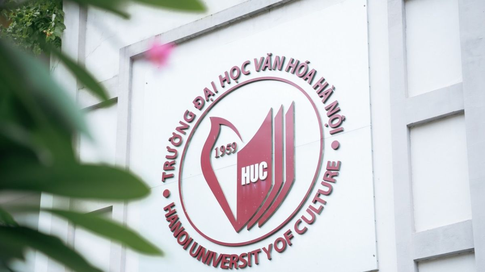
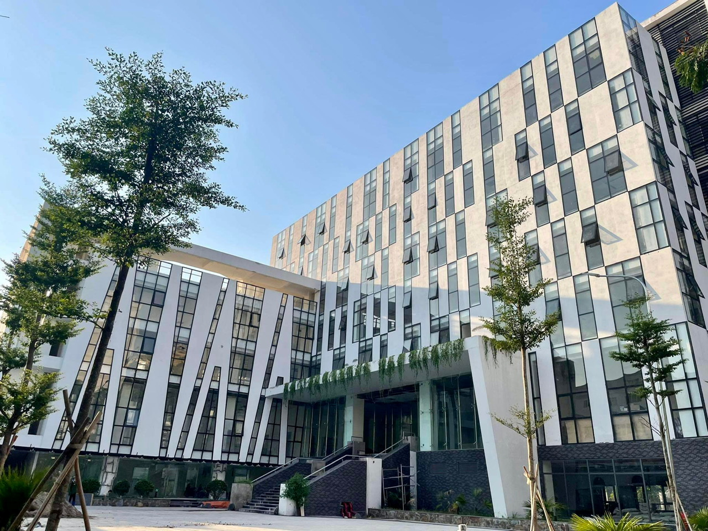
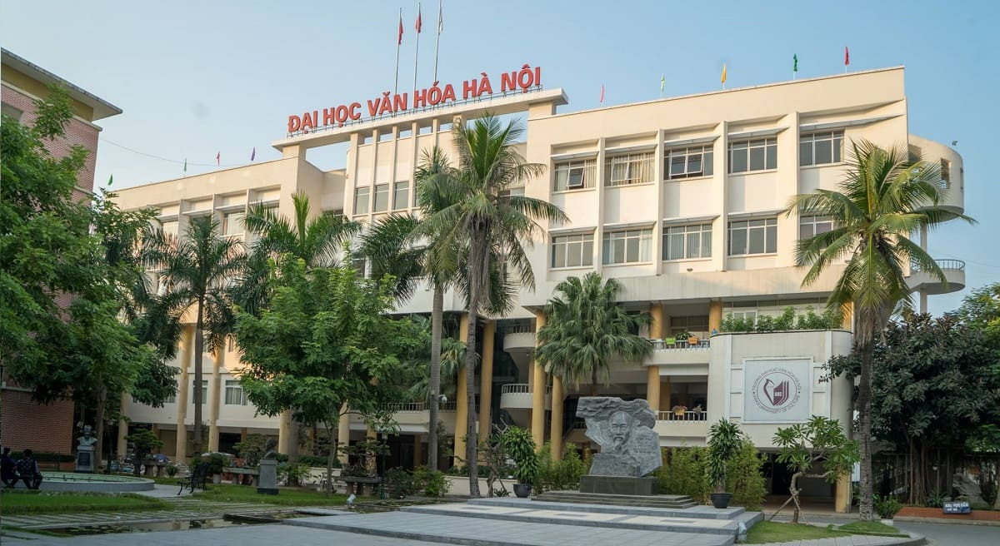

01
Tóm Tắt Dòng Lịch Sử 60 Năm
Bản tóm lược cô đọng và dễ nhớ về các mốc son từ năm 1961 đến nay. Có thể mở xem trực tiếp ngay tại trang mà không cần chuyển trang.
Được thành lập năm 1961, Khoa Thông tin, Thư viện tự hào là đơn vị chuyên môn đầu tiên của Trường Đại học Văn hóa Hà Nội và là cơ sở đào tạo đại học ngành Thông tin – Thư viện đầu tiên tại Việt Nam. Trải qua hơn 60 năm xây dựng và phát triển, Khoa luôn giữ vững vị thế trung tâm đào tạo, nghiên cứu khoa học và chuyển giao tri thức uy tín hàng đầu cả nước.
Chủ động thích ứng với kỷ nguyên số và trí tuệ nhân tạo, Khoa hiện đào tạo hai ngành trọng điểm: Khoa học Thông tin Thư viện và Quản lý Thông tin. Dự án Tài nguyên Giáo dục Mở (OER) được Khoa triển khai nhằm số hóa di sản học thuật, lan tỏa tri thức tự do và phục vụ cộng đồng học tập suốt đời.



Hơn 60 năm đồng hành cùng sự nghiệp giáo dục và văn hóa dân tộc (1961 – Nay)
Những dấu ấn tiêu biểu trong đào tạo, nghiên cứu khoa học, hoạt động sinh viên và hợp tác chuyên môn.
Mọi tư liệu, bài đọc và tài liệu số đều có thể xem trực tuyến hoặc chia sẻ tự do phục vụ mục đích học tập phi thương mại.
Bản tóm lược cô đọng và dễ nhớ về các mốc son từ năm 1961 đến nay. Có thể mở xem trực tiếp ngay tại trang mà không cần chuyển trang.
Hệ thống văn bản số, quyết định lịch sử và kỷ yếu truyền thống được gắn metadata Dublin Core 15 yếu tố chuẩn quốc tế.
Mở kho tư liệu OER →Hệ thống câu hỏi trắc nghiệm tương tác chấm điểm tự động kèm giải thích chi tiết, giúp củng cố kiến thức lịch sử Khoa.
Bắt đầu làm trắc nghiệm →